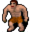

Jern¶Where to find Jern: Prim: Blackwater mountain 22, Prim: Blackwater mountain 29
{ .sprite }
| Type | NPC (talk only; never fought) |
| Found in | Prim |
| Introduced | v0.7.0 or earlier |
Locations¶
| Map | Region | Up to | Notes |
|---|---|---|---|
| Blackwater mountain 22 | Prim | 1 | – |
| Blackwater mountain 29 | Prim | 1 | Appears later, during a quest |
Quests¶
- Climbing up is forbidden: stages 22, 23, 25, 30, 36, 40
- Blackwater Mountain events (hidden flag): stages 13, 18, 43
Dialogue simulator¶
Set your quest stages and items, then talk to Jern. Same rules as the game: same checks, same options, same effects.
Rules verified against v0.8.18 game code (ConversationController.java) and dialogue data.
Dialogue (129 lines)
Exactly as in the game files. Each line appears once; links jump to where a choice leads.
prim_tavern_guest4_selector (silent check: the first matching branch below is taken)
- branch 1 (if reached stage 43 of Blackwater Mountain events (hidden flag)) → capvjern_32c
- branch 2 (if reached stage 56 of Climbing up is forbidden; reached stage 18 of Blackwater Mountain events (hidden flag)) → capvjern_23
- branch 3 (if reached stage 59 of Climbing up is forbidden; reached stage 18 of Blackwater Mountain events (hidden flag)) → capvjern_23
- branch 4 (if reached stage 60 of Climbing up is forbidden; reached stage 18 of Blackwater Mountain events (hidden flag)) → capvjern_23
- branch 5 (if reached stage 61 of Climbing up is forbidden; reached stage 18 of Blackwater Mountain events (hidden flag)) → capvjern_23
- branch 6 (if reached stage 62 of Climbing up is forbidden; reached stage 18 of Blackwater Mountain events (hidden flag)) → capvjern_23
- branch 7 (if reached stage 63 of Climbing up is forbidden; reached stage 18 of Blackwater Mountain events (hidden flag)) → capvjern_23
- branch 8 (if reached stage 40 of Climbing up is forbidden) → capvjern_22
- branch 9 (if reached stage 18 of Blackwater Mountain events (hidden flag)) → capvjern_15
- branch 10 (if reached stage 17 of Blackwater Mountain events (hidden flag)) → capvjern_1
- branch 11 (if reached stage 36 of Climbing up is forbidden; NOT reached stage 17 of Blackwater Mountain events (hidden flag)) → NPC leaves
- branch 12 (if reached stage 30 of Climbing up is forbidden) → prim_tavern_guest4_36c
- branch 13 (if reached stage 13 of Blackwater Mountain events (hidden flag)) → prim_tavern_guest4_33a
- branch 14 (if reached stage 25 of Climbing up is forbidden) → prim_tavern_guest4_19
- branch 15 (if reached stage 23 of Climbing up is forbidden) → prim_tavern_guest4_17b
- branch 16 (if reached stage 22 of Climbing up is forbidden; NOT reached stage 23 of Climbing up is forbidden) → prim_tavern_guest4_14a
- branch 17 → prim_tavern_guest4
capvjern_32c Jern: “Thank you again. [looks at the captain] I'll be going.”
- “Shadow be with you.” → NPC leaves
- “Good luck in your shift.” → NPC leaves
- “Bye.” → NPC leaves
capvjern_23 Prim guard captain: “Hey, $playername! You're back, where is the general?”
- Next → capvjern_24
capvjern_22 Jern: “$playername, you must reach Blackwater Settlement and get help from General Ortholion.”
- “OK, bye.” → conversation ends
- “Shadow be with you.” → conversation ends
capvjern_15 Prim guard captain: “We're short of men, and we don't even know where he is right now. Meanwhile Jern stares at you.” — effects: sets stage 18 of Blackwater Mountain events (hidden flag)
- “I don't know!” → capvjern_16a
- “I can't be of help this time...” → capvjern_16b
capvjern_1 Jern: “C'mon! Dare to raise your sword! You! You left my partners to DIE!” — effects: removes monsters from blackwater_mountain22, spawns monsters on blackwater_mountain29
- Next → capvjern_2
prim_tavern_guest4_36c Jern: “Look, you should leave this be. This is too shady for a kid like you.”
- “I will discover the whole truth about this.” → prim_tavern_guest4_37a
- “I'm determined to solve this.” (if reached stage 31 of Climbing up is forbidden) → prim_tavern_guest4_37d
- “I can handle myself.” → prim_tavern_guest4_37b
- “A few gornauds weren't a problem for me. I have nothing to fear from that thin man.” (if killed 50× Gornaud) → prim_tavern_guest4_37c
prim_tavern_guest4_33a Jern: “Lorn must have discovered something. Just a week or two ago we were right here bantering and chatting, trying to forget that horrible scene of Kirg's death.” — effects: sets stage 13 of Blackwater Mountain events (hidden flag)
- “Why didn't you go along with them?” → prim_tavern_guest4_34a
- “Did he mention anything unusual?” → prim_tavern_guest4_34c
prim_tavern_guest4_19 Jern: “Woah, I feel really good now.”
- “What about a reward?” → prim_tavern_guest4_20a
- “I'm glad to see you're better.” → prim_tavern_guest4_20b
prim_tavern_guest4_17b Jern: “Uhmm, It's you... Have you brought the water?”
- “I haven't, be patient.” → prim_tavern_guest4_17c
- “Yes, here are 2 bottles.” (if reached stage 24 of Climbing up is forbidden; hand over 2× Cold bottle of mountain water) → prim_tavern_guest4_18b
- “Here you are, a large bottle of fresh water.” (if reached stage 24 of Climbing up is forbidden; hand over 1× Cold jar of mountain water) → prim_tavern_guest4_18b
- “Here you are, a nice little bottle of fresh water.” (if reached stage 24 of Climbing up is forbidden; carry 1× Cold bottle of mountain water; NOT carry 2× Cold bottle of mountain water; NOT carry 1× Cold jar of mountain water) → prim_tavern_guest4_18c
- “Yes, but I seem to have lost it anywhere.” (if reached stage 24 of Climbing up is forbidden; NOT carry 1× Cold bottle of mountain water; NOT carry 1× Cold jar of mountain water) → prim_tavern_guest4_18d
- “Where can I find the streams?” → prim_tavern_guest4_18a
prim_tavern_guest4_14a Dummy NPC: “[The muscular man is still tired and drunk, next to an unfinished jar of mead]”
- “I'd better come back later.” → conversation ends
- “Hey, don't drink anymore. I need you to get better.” → prim_tavern_guest4_15a
prim_tavern_guest4 Jern: “Claws. Scratching.”
- Next → prim_tavern_guest4_1
capvjern_24 Jern: “It sure took you a while. What happened?”
- “General Ortholion was almost murdered by Ehrenfest, but I was there to save him.” → capvjern_25a
- “I killed Kamelio. Twice.” → capvjern_25b
capvjern_16a Prim guard captain: “Do you remember anything out of the ordinary?”
- “He's been shady since the very beginning.” → capvjern_17a
- “No...Apart from his need to not be heard by the Feygard soldiers.” → capvjern_17b
capvjern_16b Jern: “Or maybe yes.”
- Next → capvjern_16a
capvjern_2 Prim guard captain: “Stop, OK?! I'm really sorry, Jern! sheathes his sword We were scared. That's all, OK?! Gornauds have been decimating us while you were in the tavern day and night.”
- Next → capvjern_3
prim_tavern_guest4_37a Jern: “If that is your decision, I will not interfere. You're valiant, kid!”
- “Thanks, Shadow be with you.” → conversation ends
- “Things need to be cleared up. Bye.” → conversation ends
prim_tavern_guest4_37d Jern: “What about that shady guy you mentioned?”
- “I no longer collaborate with him.” → prim_tavern_guest4_38a
- “He would only slow me down.” → prim_tavern_guest4_38b
- “He seems a good man, but he lied to me.” → prim_tavern_guest4_38c
prim_tavern_guest4_37b Jern: “Hah! holds up the empty mead jar I'm pretty sure of that, but beware anyway!”
- “Shadow be with you, my drunken friend.” → conversation ends
- “We'll meet later. Bye.” → conversation ends
prim_tavern_guest4_37c Jern: “This is no joke, OK? If that guy has really something to do with the missing people or Lorn's death, he surely isn't just a "thin man".”
- “I'll keep that in mind. Thank you.” → conversation ends
- “Pfft, whatever.” → conversation ends
prim_tavern_guest4_34a Jern: “I was too afflicted. Lorn thought I wouldn't be able to focus on the exploration...”
- “Did they mention anything at the tavern?” → prim_tavern_guest4_34c
- “Where Lorn's crew started looking for the missing couple?” → prim_tavern_guest4_35
prim_tavern_guest4_34c Jern: “No, I don't think so. He was so drunk, and me too! We passed the whole night singing, chatting, forgetting...”
- “What about the missing couple?” → prim_tavern_guest4_35
prim_tavern_guest4_20a Jern: “A reward? Isn't the satisfaction of aiding a lost soul enough reward?”
- “No, It's not.” → prim_tavern_guest4_21a
- “I can see you're much better.” → prim_tavern_guest4_20b
prim_tavern_guest4_20b Jern: “And all thanks to you! Tell me, what did you need?”
- “Anything you could tell me about Lorn and his partners. That would help.” → prim_tavern_guest4_21b
- “I'll tell you later. I have things to do now.” → prim_tavern_guest4_21c
prim_tavern_guest4_17c Jern: “I will be righ...right here, kid. Thank you.”
- “Shadow be with you.” → conversation ends
- “OK, bye.” → conversation ends
prim_tavern_guest4_18b Dummy NPC: “The muscular guy looks at the water you brought to him. His eyes open widely. He starts to drink the water straight off and finishes it in the blink of an eye, taking a deep breath just after putting the empty glass on the table.” — effects: sets stage 25 of Climbing up is forbidden
- “How was it?” → prim_tavern_guest4_19
prim_tavern_guest4_18c Jern: “This little bottle? This is not enough, it evaporates before it reaches the stomach. Bring at least 2 of these!”
- “Hmpf, OK.” → conversation ends
- “I'll bring more water, don't worry.” → conversation ends
prim_tavern_guest4_18d Jern: “Oh, ow, my head!”
prim_tavern_guest4_18a Jern: “Ag...Again?! Are you drunk or me? East of here. Underground. Deep in those caverns.”
- “Hmpf, OK. Bye.” → conversation ends
- “I'll bring the water, don't worry.” → conversation ends
prim_tavern_guest4_15a Jern: “M...Maybe some water. Yes, from the moun...tains. That'd be a relief!”
- Next → prim_tavern_guest4_16
prim_tavern_guest4_1 Jern: “Got a hold of poor Kirg they did.”
- Next → prim_tavern_guest4_2
capvjern_25a Prim guard captain: “You sure are brave enough, kid. I hope you'll be staying around for a while.”
- “Eh...” → capvjern_26a
- “I don't think the job is paid well enough.” → capvjern_26a
- “Sorry, but I must do as I was told and find my brother Andor.” → capvjern_26a
capvjern_25b Jern: “You WHAT?!”
- “Hey, hey, calm down big man! Let me explain.” → capvjern_26c
- “I had no other choice.” → capvjern_26b
capvjern_17a Jern: “Anything more specific?”
- “Give me some time to remember.” → capvjern_18a
- “Umm...No, but I think he was scared of Feygard soldiers hearing our conversation.” → capvjern_17b
capvjern_17b Jern: “I see...Feygard soldiers.”
- Next → capvjern_18b
capvjern_3 Jern: “Ah! Now your incompetence is my fault?”
- Next → capvjern_4
prim_tavern_guest4_38a Jern: “I guess that's a wise choice, so what's your plan?”
- “I...really don't know where to start.” → prim_tavern_guest4_39a
- “Do you have anything more to tell me about Lorn?” → prim_tavern_guest4_39b
- “What plan?” → prim_tavern_guest4_39c
prim_tavern_guest4_38b Jern: “You sure? Ha ha, you're a kid after all!”
- “Can you tell me anything more about Lorn's latest mission?” → prim_tavern_guest4_39b
- “What do you mean?!” → prim_taver_guest4_39d
prim_tavern_guest4_38c Jern: “Hmm. Liars can be good guys too, but why lie about that? I hope to not have any future dealings with him!”
- “Do you remember anything more about Lorn's last mission?” → prim_tavern_guest4_39b
prim_tavern_guest4_35 Jern: “What couple? I know nothing about a couple.” — effects: sets stage 30 of Climbing up is forbidden
- “A man called Ehrenfest told me that Lorn was on a mission to find a missing couple.” → prim_tavern_guest4_36a
- “I heard a rumor that they were looking for a missing couple.” → prim_tavern_guest4_36b
prim_tavern_guest4_21a Jern: “HA, HA! Such a pity! But weren't you here to ask me something?”
- “Yes. People told me Lorn was a regular in this tavern.” → prim_tavern_guest4_21b
prim_tavern_guest4_21b Jern: “I see...”
- Next → prim_tavern_guest4_22
prim_tavern_guest4_21c Jern: “Have a good day then. Thanks!”
prim_tavern_guest4_16 Jern: “Do you mind bringing me a good, large bottle of water f...from the streams?” — effects: sets stage 23 of Climbing up is forbidden
- “No, go buy yourself a bottle.” → conversation ends
- “The streams?” → prim_tavern_guest4_17a
- “OK, I'll be back with the water.” → conversation ends
prim_tavern_guest4_2 Jern: “Those damn beasts.”
- Next → prim_tavern_guest4_3
capvjern_26a Jern: “Ha HA! You want the kid to do your job for free? You see, $playername? We have not even begun clearing the mountain entrance. I wonder why!”
- “Do you need any help with that?” → capvjern_27a
capvjern_26c Jern: “Explain, explain it already!”
- Next → capvjern_26b
capvjern_26b Prim guard captain: “Calm down, Jern. Kamelio, alive? How? Where?”
- “Deep in a cave below the Elm mine.” → capvjern_27b
capvjern_18a Jern: “Don't worry, We'll talk later.”
capvjern_18b Jern: “Asking for their help seems not to be the worst idea right now.”
- “Yes.” → capvjern_19
- “Maybe...” → capvjern_19
- “Are you sure?” → capvjern_19
capvjern_4 Prim guard captain: “raises his hands Drop it already! We're getting more and more surrounded by those beasts, you know? Right now there's no point to worrying about somebody who fell off the mountain!”
- Next → capvjern_5
prim_tavern_guest4_39a Jern: “Oh, c'mon. Then what about beating up those guards? They didn't move a finger for my friend, and I won't forget that.”
- “Sounds a bad idea, but let's do it.” → prim_tavern_guest4_40a
- “Sounds good, let's do it!” → prim_tavern_guest4_40a
- “I don't like to cause trouble.” → prim_tavern_guest4_40b
prim_tavern_guest4_39b Jern: “Hmm, not really. But we could surely ask in the guardhouse. I know very well they will talk. They had better!”
- “They'll be a nice warm-up.” → prim_tavern_guest4_40a
- “OK, let's try...Again.” → prim_tavern_guest4_40a
prim_tavern_guest4_39c Jern: “laughs loudly”
- Next → prim_tavern_guest4_39a
prim_taver_guest4_39d Jern: “Ha, ha! Never mind.”
- “Do you remember anything more about Lorn's mission?” → prim_tavern_guest4_39b
prim_tavern_guest4_36a Jern: “Ehrenfest? Who is he? What does he know? It's common knowledge that guard patrols are not actively searching for missing villagers due to lack of resources.”
- “So he lied to me? Why?” → prim_tavern_guest4_36c
- “Uhm...I will ask him about this inconsistency.” → prim_tavern_guest4_36c
prim_tavern_guest4_36b Jern: “Eh? No, no. They went to the mountainside, just another patrol round...Who told you that?”
- “Never mind. I really need to go.” → conversation ends
- “A guy called Ehrenfest said that to me.” → prim_tavern_guest4_36a
prim_tavern_guest4_22 Jern: “Well, I was part of a patrol crew formed of five people. Kamelio, Kirg, Duala, Lorn and me.”
- Next → prim_tavern_guest4_23
prim_tavern_guest4_17a Jern: “Yes, east of he..re. There's a hole. Under the mountainside...”
- “Sounds vague, but I'll try.” → conversation ends
- “Fine. I will come back with the water.” → conversation ends
prim_tavern_guest4_3 Jern: “And it's all my fault. sob”
- “What do you know about Lorn's accident?” (if reached stage 21 of Climbing up is forbidden) → prim_tavern_guest4_4
capvjern_27a Prim guard captain: “We have more important matters to attend. Now, where is the general? What about the workers of the mine?”
- “Uh ... The general will certainly let you know in full detail ... Soon enough.” → capvjern_28c
- “No survivors, except Arghest. Many Feygard soldiers have fallen too.” → capvjern_28b
capvjern_27b Jern: “For the Shadow, tell me why you had to kill my beloved friend!!”
- “It was me or him. He was no longer your friend.” → capvjern_28d
- “I am truly sorry, but he did try to kill us too.” → capvjern_28a
capvjern_19 Prim guard captain: “That's right. But I feel that's what they wanted since the very beginning.”
- Next → capvjern_20
capvjern_5 Jern: “Are you out of your mind? Lorn would never have died from something like that!”
- Next → capvjern_6
prim_tavern_guest4_40a Jern: “Good! I am eager to crush some meatheads!” — effects: sets stage 36 of Climbing up is forbidden
- “Hey, not so fast!” → NPC leaves
prim_tavern_guest4_40b Jern: “Oh, c'mon...”
- “Uh, and then I am the kid, right? Let's go.” → prim_tavern_guest4_40a
prim_tavern_guest4_23 Jern: “Mountain patrol crews were created because of the monster activity. Some people still think they are somehow sent by the people from Blackwater Settlement...”
- “No. They are suffering a siege from even more powerful monsters.” (if killed 1× White wyrm) → prim_tavern_guest4_24a
- “And?” → prim_tavern_guest4_24b
prim_tavern_guest4_4 Jern: “sob Leave me alone...”
- “Cheap mead won't make you forget.” → prim_tavern_guest4_5
capvjern_28c Prim guard captain: “We will wait for him here, in that case.”
- Next → capvjern_29c
capvjern_28b Jern: “Anything else?”
- “General Ortholion is inside the mine dependencies. I found Kamelio, he tried to kill us but I defeated him.” → capvjern_28a
- “You better ask the general, I am tired already. He is still in the Elm mine celebrating he's still alive.” → capvjern_28c
capvjern_28d Jern: “You or ...? That's utter nonsense!”
- Next → capvjern_28a
capvjern_28a Prim guard captain: “That's absurd! Kamelio?! Trying to kill a kid? Be reasonable, $playername. We cannot simply believe that.”
- “Kamelio was no longer the person you knew.” → capvjern_29b
- “General Ortholion was there.” → capvjern_29a
capvjern_20 Jern: “$playername, what do you think? This is probably our best bet.”
- “I'm gonna rest for a while. See you later.” → conversation ends
- “I will warn the general then.” → capvjern_21
capvjern_6 Prim guard captain: “How can you be so sure? Accidents happen! He could have fallen off during an attack or a rock slide.”
- Next → capvjern_7
prim_tavern_guest4_24a Jern: “I know! We faced white wyrms on the mountain heights. I'm afraid the political problems are something leaders of each place must deal with. We at least tried to keep Prim safe from monster attacks.”
- Next → prim_tavern_guest4_25a
prim_tavern_guest4_24b Jern: “And that is not true. Why would they send monsters to their own dominion? Of course they wouldn't. There are monsters up there in the mountain heights too, possibly even more dangerous than gornauds.”
- Next → prim_tavern_guest4_25b
prim_tavern_guest4_5 Jern: “Th..then buy me an expensive one. Ha, ha.”
- “Stop joking, Lorn is dead.” → prim_tavern_guest4_6
- “I won't waste my time with you anymore.” → conversation ends
capvjern_29c Jern: “Speak for yourself, cap! I'll head to the mine.”
- “You are needed here more.” → capvjern_30c
- “The mine is no longer a safe place.” → capvjern_30d
capvjern_29b Jern: “I cannot believe in your words, $playername.”
- Next → capvjern_30b
capvjern_29a Jern: “So? You want me to believe that Kamelio went crazy and tried to kill you?”
- “Believe what you want. I give up.” → conversation ends
- “I am not lying!” → capvjern_29a
- “This is his cloak, right? [Show the Kazarite cloak]” (if carry 1× Kazarite cloak) → capvjern_30a
capvjern_21 Prim guard captain: “It's settled then. We will spread the word among the guards.” — effects: sets stage 40 of Climbing up is forbidden
- “Great. Shadow be with you.” → conversation ends
- “We'll meet soon, then.” → conversation ends
capvjern_7 Prim guard captain: “That is what the guy who reported it told me, too! Now I'm starting to welcome those Feygard guys. There aren't attacks anymore since they guard the village.”
- Next → capvjern_8
prim_tavern_guest4_25a Jern: “But since the gornauds invaded the mountainsides, wolves went down to the fir forest and the path between Prim and the Elm mine became more and more unsafe.”
- Next → prim_tavern_guest4_26a
prim_tavern_guest4_25b Jern: “We tried to keep the threat in the mountains, but gornauds invaded the mountain wolves' homes and forced them to establish in the small fir forest around Prim.”
- Next → prim_tavern_guest4_26b
prim_tavern_guest4_6 Jern: “Lorn t...too? We will all die!”
- Next → prim_tavern_guest4_7
capvjern_30c Jern: “Hmpf ... You know what? Right, someone has to patrol this settlement.”
- Next → capvjern_31a
capvjern_30d Prim guard captain: “I can believe that. Jern, let Feygard folks take care of the mine for a while, we have a lot to do here.”
- Next → capvjern_30c
capvjern_30b Jern: “But the truth is that I can neither believe you killed him for the sake of it. Plus, the General is alive as you say, and it is thanks to you.”
- Next → capvjern_29a
capvjern_30a Prim guard captain: “What in the world ...? It moves!”
- “Yes. This strange substance was responsible of your friend's behaviour.” → capvjern_31b
- “Do you believe me now?” → capvjern_31b
capvjern_8 Jern: “Eh?! What Feyga...”
- “Who told you that?” → capvjern_9
prim_tavern_guest4_26a Jern: “Several miners were killed by the wolves, so the mine eventually closed. Furthermore, the main mining tunnel between Elm mine and Stoutford collapsed and the relations with Blackwater Settlement tensed up.”
- Next → prim_tavern_guest4_28
prim_tavern_guest4_26b Jern: “Wolf attacks became more and more frequent. While we were taking care of the gornauds, miners died due to packs of wolves.”
- Next → prim_tavern_guest4_27b
prim_tavern_guest4_7 Jern: “Why? sob What have we d...done to deserve this!”
- “People say he fell off the mountainside.” → prim_tavern_guest4_8a
- “Probably you didn't train enough.” → prim_tavern_guest4_8b
capvjern_31a Jern: “Take this old key. I used to work in the mines when I was younger. I am sure there was a supply chest somewhere inside.”
- Next → capvjern_32a
capvjern_31b Jern: “[staring at the cloak] I have never seen this before. Not even when I used to work there. What in the world is this?”
- Next → capvjern_32b
capvjern_9 Prim guard captain: “stares at you What the hell kid? Why're you here again?”
- Next → capvjern_10
prim_tavern_guest4_28 Jern: “Finally, as if a mastermind were behind all of this, a coordinated group of gornauds moved towards Prim from the east.”
- Next → prim_tavern_guest4_29
prim_tavern_guest4_27b Jern: “Obviously, the mine had to close. Days after that, the tunnel that lead to Stoutford through the mountain collapsed and people from Blackwater Settlement blamed Prim.”
- Next → prim_tavern_guest4_28
prim_tavern_guest4_8a Jern: “Yeah, good one kid. I'm not d...drunk enough to believe that! sob Leave me alone.”
- “As you wish, drunkard.” → conversation ends
- “What do you mean?” → prim_tavern_guest4_9
prim_tavern_guest4_8b Jern: “[The muscular guy ducks his head]”
- “Pft, I'm wasting time. Bye.” → conversation ends
- “Anyway, Lorn died by falling off the mountain.” → prim_tavern_guest4_8a
capvjern_32a Jern: “Thank you again. looks at the captain I'll be going.” — effects: gives 1× Rusted key, removes monsters from blackwater_mountain29, sets stage 43 of Blackwater Mountain events (hidden flag)
- “Shadow be with you.” → NPC leaves
- “Good luck in your shift.” → NPC leaves
- “Bye.” → NPC leaves
capvjern_32b Prim guard captain: “[looks at you]”
- Next → capvjern_33
capvjern_10 Jern: “Hey, show some respect. This youngster dared to go where you didn't. He told me what happened, too.”
- Next → capvjern_11
prim_tavern_guest4_29 Jern: “We got rid of them, but at what cost...?”
- Next → prim_tavern_guest4_30
prim_tavern_guest4_9 Jern: “Pft...Lorn has been cl...climbing up and down these mountains since...Forever.”
- “Accidents occur.” → prim_tavern_guest4_10
- “I saw his corpse. It was neither a monster nor a fall.” → prim_tavern_guest4_11
capvjern_33 Jern: “[stares at the cloak again]”
- Next → capvjern_34
capvjern_11 Prim guard captain: “puts on an exhausted face Whatever...I don't know his name. Just another one of the very few visitors we receive here. He was wearing a blue cloak, I think.”
- “Ehrenfest!” → capvjern_12
prim_tavern_guest4_30 Jern: “One of those beasts...squashed Kirg's head with a single blow. We were...are always underestimating their intelligence.”
- Next → prim_tavern_guest4_31
prim_tavern_guest4_10 Jern: “No, no, no. The monsters...They did it! They killed my friends!!”
- “We'll talk later, when you're less drunk and nervous.” → conversation ends
- “No, neither the gornauds nor a fall killed him.” → prim_tavern_guest4_11
prim_tavern_guest4_11 Jern: “What then?!”
- “That's what I'm trying to figure out.” → prim_tavern_guest4_12a
- “Nobody seems to know, or care about it.” → prim_tavern_guest4_12b
capvjern_34 Jern: “[stares at you again]”
- “What ...?” → capvjern_35
- “You alright?” → capvjern_35
capvjern_12 Jern: “The shady guy, isn't it?”
- “He lied to me again!” → capvjern_13
prim_tavern_guest4_31 Jern: “I was severely injured when the mysterious disappearances started. The mine was the first place where it occurred. But then, some villagers disappeared too.”
- Next → prim_tavern_guest4_32
prim_tavern_guest4_12a Jern: “And the g...guards?”
- “They considered it an accident and left it be.” → prim_tavern_guest4_12b
- “The guards? Those lazy fools won't do anything.” → prim_tavern_guest4_12b
prim_tavern_guest4_12b Jern: “WHAT?! hits the table and gets up Is that what we get in exchange for...?!”
- Next → prim_tavern_guest4_13
capvjern_35 Jern: “[puts his hand over the captain's shoulder] Hey, captain, wake up.”
- “[Put the cloak away]” → capvjern_36
capvjern_13 Prim guard captain: “This is serious. That guy might be behind the disappearances.”
- “He has been in the mine during these last few days.” → capvjern_14
prim_tavern_guest4_32 Jern: “Gornauds may be smart, but kidnapping people?”
- “Hmm, you have a point there.” → prim_tavern_guest4_33a
- “Why not?” → prim_tavern_guest4_33b
prim_tavern_guest4_13 Jern: “...these years...Uuugh. [The smelly guy gets dizzy, sits down again next to the table and rests his head on his muscled arms]” — effects: sets stage 22 of Climbing up is forbidden
- “You seem tired. We'll talk later.” → conversation ends
- “Are you OK?” → prim_tavern_guest4_14b
capvjern_36 Prim guard captain: “... It is un...unbearable.”
- Next → capvjern_37
capvjern_14 Jern: “We should look for him. This Ehrenfest guy needs to clear up many things.”
- Next → capvjern_15
prim_tavern_guest4_33b Jern: “Why would they?”
- “You mentioned a mastermind.” → prim_tavern_guest4_34b
prim_tavern_guest4_14b Jern: “Uuugh... I'm, I'm not. I drank too much mead. Day by day, since... since Kirg's dea...death.”
- “You'd better stop drinking. We'll talk later when you get better.” → conversation ends
- “Is there something I can do?” → prim_tavern_guest4_15b
capvjern_37 Jern: “[breathing heavily] That ... that substance is dangerous! $playername, you must destroy the cloak!”
- “The mine is full of it! Do you believe me now?” → capvjern_38
prim_tavern_guest4_34b Jern: “Yes, someone behind the attacks and the following disappearances.”
- Next → prim_tavern_guest4_33a
prim_tavern_guest4_15b Jern: “You could get me some coo...cool water. Yes.”
- Next → prim_tavern_guest4_16
capvjern_38 Jern: “I do. [looks at Jern] I do believe in what the kid says.”
- Next → capvjern_39
capvjern_39 Jern: “Grgh ... Let's go to the mine, then. We must take Kamelio's corpse from there and give it a proper burial!”
- “It is too dangerous, you mustn't go.” → capvjern_40
- “Trained soldiers were lost down there. Let General's men handle this.” → capvjern_40
capvjern_40 Jern: “So you suggest what? Staying here doing nothing!? I am NOT leaving my friend's corpse there.”
- “What about those who are alive here?” → capvjern_30c
- “Do not lose your life for a bunch of dead bones. You must live for your friends.” → capvjern_30c
Version history¶
| Version | Change |
|---|---|
| v0.7.0 | Present in v0.7.0 (earliest release tracked) |
| v0.7.14 | Renamed “Prim bar regular” → “Jern” Conversation changed Dialogue: 92 lines added, 1 line changed |
| v0.7.15 | Dialogue: 1 line changed |
| v0.8.8 | Dialogue: 33 lines added, 3 lines changed · text: “Hah! What about the shady guy you mentioned?” → “What about that shady guy you mentioned?” · text: “Look, you should leave this be. Maybe this is too shady for a kid lik…” → “Look, you should leave this be. This is too shady for a kid like you.” |
| v0.8.18 | Dialogue: 1 line changed |
Verified against v0.8.18 and every earlier release back to v0.7.0 (game data compared release by release).
Behind the scenes¶
How the game data handles this character. Not needed for playing.
Technical information
| Entry ID | prim_bar_regular |
| Type (wiki) | NPC |
| Spawn group | prim_tavern_guest4 |
| Loot table | – |
| Conversation | prim_tavern_guest4_selector |
| Faction | – |
| Movement | – |
| Icon | monsters_rltiles1:106 |
| Defined in | res/raw/monsterlist_v069_npcs.json |
Raw data:
{
"id": "prim_bar_regular",
"name": "Jern",
"iconID": "monsters_rltiles1:106",
"monsterClass": "humanoid",
"spawnGroup": "prim_tavern_guest4",
"phraseID": "prim_tavern_guest4_selector"
}
Community notes¶
Written by players, not generated from game data. Observations: what players notice in-game · Lore: the in-world story · Trivia: real-world facts, references, development history · Theory / speculation: unconfirmed ideas; may just be unfinished content
Observations¶
No notes yet. Contributions are welcome: add a note.
Lore¶
No notes yet. Contributions are welcome: add a note.
Trivia¶
No notes yet. Contributions are welcome: add a note.
Theory / speculation¶
No notes yet. Contributions are welcome: add a note.
Data from v0.8.18